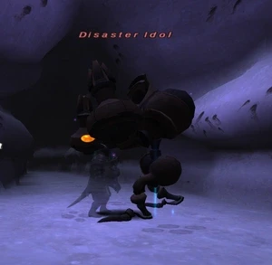

Level 75 reference · Zenith rules
|
Job: Black Mage Notorious Monster |
 |

| Zone | Level | Drops | Steal | Spawns |
Notes |
|---|---|---|---|---|---|
|
1 |
A , M | ||||
|
HP = Detects Low HP; M = Detects Magic; Sc = Follows by Scent; T(S) = True-sight; T(H) = True-hearing JA = Detects job abilities; WS = Detects weaponskills; Z(D) = Asleep in Daytime; Z(N) = Asleep at Nighttime | |||||

Notes:
- (Spawned by Tenzen Path)
- Casts spells based on day element.
- Suceptible to Blind, Poison and the elemental debuffs, but resists Elegy, Requiem, Silence, Stun, and Flash
- Does not use Melt Down.
- Fighting on Lightsday recommended due to the NM not having access to day strengthend elemental -aga III's besides Banishga.
- Soloable by 75 RDM/NIN with Gravity and Bind. Ironically a harder fight on Lightsday as Diaga II will wipe shadows much faster and lack of Ancient Magic makes for less stalling time. Shell and Blink are also problematic.
- Also soloed by a 71SMN/WHM on Lightsday by a mixture of carby-kiting and the Lv. 70 Blood Pacts.
- Solo by PLD/NIN utilizing Chivalry and Flash, Easy fight.
Adapted from Eden Wiki: Disaster Idol · Contributors and history · CC BY-SA 4.0. Revision 44573. Layout, links and optional background text adapted for Zenith.